The top-100 CNNs as a committee: per-image difficulty, model diversity, and ensembles
Date: 18/07/2026
GOHREP
Goal:
Score every held-out image with all 100 kept CNNs (the global top-100 of the Base-CNN grid search) and use the committee to answer two questions: (1) where does scoring break down — which severity scores, and which individual images (candidate label errors); and (2) do the 100 models fail on the same images or different ones (model diversity). Whether that diversity can be turned into a better scorer is the subject of analyses/14_ensembling, which builds on the matrices this document verifies.
Hypothesis:
Errors concentrate on the middle scores (adjacent-severity confusion, the ceiling analyses/08_accuracy_noise_floor §6 identified) and on a few genuinely mislabelled crops. The 100 models are all top-100 configs, so they are correlated, but not identical — they should miss different images, which is the raw material any committee rule would have to work with.
Rationale:
100 independently trained models are a natural committee. Per-score and confusion views show where it fails; the spread of per-image agreement shows whether the failures are shared or idiosyncratic; and the gap between “at least one model is right” (an oracle) and “the vote is right” bounds the diversity a committee could in principle exploit.
1. Setup
1.1 Packages
Code
# 1.1import reimport sysfrom pathlib import Pathimport numpy as npimport pandas as pdimport matplotlib.pyplot as pltfrom PIL import Image# Figures reused by the thesis are written here as well as shown inline.THESIS_PLOTS = Path("thesis_plots")THESIS_PLOTS.mkdir(exist_ok=True)plt.rcParams.update({"figure.dpi": 120})# Diverging 0->6 palette (blue=healthy .. red=dead), reused for severity throughout.SEV = ["#2c7bb6", "#66c2a5", "#abdda4", "#ffcc66", "#fdae61", "#f46d43", "#d7191c"]
1.2 Score every held-out image with every kept model (cached)
Each of the 100 kept models is the best cross-validation fold of a top-100 config, saved to results/<avg_vaf>_<model_id>/model.keras by the grid search. Here every model is reloaded and run over the two held-out splits — ensemble (455 images) and test (308) — that were set aside from training (the models were trained on train+val only, so both splits are genuinely unseen). A model’s prediction for an image is the argmax of its softmax output (the most-probable severity score). The result is two prediction matrices P[model, image]; because inference over 100 tiny CNNs is the only slow step, both matrices are cached to pred_cache/predictions.npz and only the first render loads TensorFlow.
Code
# 1.2def find_repo_root(start: Path) -> Path:for p in [start, *start.parents]:if (p /"data"/"datasets"/"medoid_64"/"medoid_64.csv").exists():return praiseFileNotFoundError("repo root not found")ROOT = find_repo_root(Path.cwd())RESULTS = ROOT /"models"/"03_Medoid_CNN_RandomSearch"/"01_Categorical_Loss"/"results"CACHE = Path("pred_cache")CACHE.mkdir(exist_ok=True)NPZ = CACHE /"predictions.npz"model_dirs =sorted((p for p in RESULTS.iterdir() if (p /"model.keras").exists()), key=lambda p: p.name)ifnot model_dirs:raiseFileNotFoundError(f"No model.keras under {RESULTS}. Sync the top-100 models down first.")fingerprint ="v2|"+",".join(d.name for d in model_dirs)def build(): sys.path.append(str(ROOT /"src"))import base_datasetimport tensorflow as tf ds = base_dataset.load_dataset(str(ROOT /"data"/"datasets"/"medoid_64"/"medoid_64.npy")) Xe, ye = np.asarray(ds["ensemble_images"]), np.asarray(ds["ensemble_labels"]).astype(int) Xt, yt = np.asarray(ds["test_images"]), np.asarray(ds["test_labels"]).astype(int) files_t = np.array([Path(str(f)).name for f in np.asarray(ds["test_filepaths"]).tolist()]) Pe = np.zeros((len(model_dirs), len(ye)), np.int16) Pt = np.zeros((len(model_dirs), len(yt)), np.int16) ids, vafs = [], []for i, d inenumerate(model_dirs): avg_vaf, model_id = d.name.split("_", 1) m = tf.keras.models.load_model(d /"model.keras", compile=False) Pe[i] = np.argmax(m.predict(Xe, verbose=0), axis=1) Pt[i] = np.argmax(m.predict(Xt, verbose=0), axis=1) tf.keras.backend.clear_session() ids.append(model_id); vafs.append(float(avg_vaf))returndict(Pe=Pe, ye=ye, Pt=Pt, yt=yt, files_t=files_t, model_ids=np.array(ids), avg_vaf=np.array(vafs), fingerprint=fingerprint)art =Noneif NPZ.exists(): d = np.load(NPZ, allow_pickle=True)if"Pe"in d.files andstr(d["fingerprint"]) == fingerprint: art = {k: d[k] for k in d.files}if art isNone: art = build() np.savez(NPZ, **art)Pe, ye = art["Pe"].astype(int), art["ye"].astype(int) # ensemble split: build/tune combiners herePt, yt = art["Pt"].astype(int), art["yt"].astype(int) # test split: reported only, never tuned onfiles_t =list(art["files_t"])model_ids =list(art["model_ids"])avg_vaf = art["avg_vaf"].astype(float)n_models = Pt.shape[0]CLASSES = np.arange(7)
The splits are class-balanced (equal images per score), which matters for §1.4: on balanced data exact accuracy equals balanced accuracy, and a majority-class guess scores only 1/7.
1.3 Validation: does the inference reproduce the grid search’s own numbers?
Before trusting any of it, the inference is checked against an independent record of the same quantity: the grid search already evaluated each kept model on this exact test split and wrote its accuracy to test_acc in random_search_results.csv. If the committee matrix is built correctly, each model’s test accuracy computed here from Pt must equal that recorded value. (Two of the 100 models’ rows are still in the un-merged parts/, so those are folded in for a complete join.)
Code
# 1.3res = pd.concat( [pd.read_csv(RESULTS.parent /"random_search_results.csv")]+ [pd.read_csv(p) for p in (RESULTS.parent /"parts").glob("*.csv")], ignore_index=True,).drop_duplicates("model_id")recorded = res.assign(model_id=res.model_id.astype(str)).set_index("model_id")["test_acc"]mine = (Pt == yt[None, :]).mean(1) # per-model test accuracy, hererec = np.array([recorded.get(str(mid), np.nan) for mid in model_ids])matched =~np.isnan(rec)print(f"Matched {matched.sum()}/{n_models} models to a recorded test_acc.")print(f"Max |here - recorded| = {np.max(np.abs(mine[matched] - rec[matched])):.5f} "f"(0 => the inference exactly reproduces the grid search's own evaluation).")
Matched 100/100 models to a recorded test_acc.
Max |here - recorded| = 0.00000 (0 => the inference exactly reproduces the grid search's own evaluation).
A maximum difference of zero means the prediction matrix is not a black box: it reproduces, model for model, the accuracies the grid search recorded when it trained them. Everything below is built on this verified matrix.
1.4 Metrics and committee statistics (defined before use)
Accuracy is reported two ways, following the project convention (analyses/03 §6): exact (predicted score = true score) and near-miss (within ±1, i.e. the standard ±1 tolerance). Because the splits are class-balanced, exact accuracy also equals balanced accuracy. For each image the committee gives three counts that partition the 100 models — n_right (exact), n_near (off by exactly 1), n_wrong (off by ≥2) — plus the modal prediction (the single score the most models vote for) and its agreement (how many of the 100 voted it). The majority vote is that modal score; the oracle is “≥1 of the 100 models is exactly right”, an upper bound on what any committee rule could achieve.
Sanity: vote == modal prediction for every image: True
2. Where scoring breaks down — by severity score
The first question is which scores the committee gets wrong. The stacked bar below splits each true score’s images into exact / off-by-1 / off-by-≥2 (so each bar sums to 1), and the confusion matrix shows exactly which scores are mistaken for which. Both use the majority vote on the test split.
Code
# 2.1comp = np.array([[np.mean(np.abs(v_t[yt == c] - c) == k) if k <2else np.mean(np.abs(v_t[yt == c] - c) >=2)for c in CLASSES] for k in (0, 1, 2)]) # rows: exact, off1, off>=2fig, ax = plt.subplots(figsize=(9, 4.5))bottom = np.zeros(7)for row, lab, col inzip(comp, ["exact", "off by 1", "off by ≥2"], ["#1a9850", "#fdae61", "#d73027"]): ax.bar(CLASSES, row, 0.7, bottom=bottom, label=lab, color=col) bottom += rowax.set_xticks(CLASSES); ax.set_xlabel("True severity score"); ax.set_ylabel("Fraction of images")ax.set_ylim(0, 1); ax.set_title("Vote outcome composition by score (test)")ax.legend(ncol=3, loc="lower center", fontsize=9)plt.tight_layout(); plt.show()
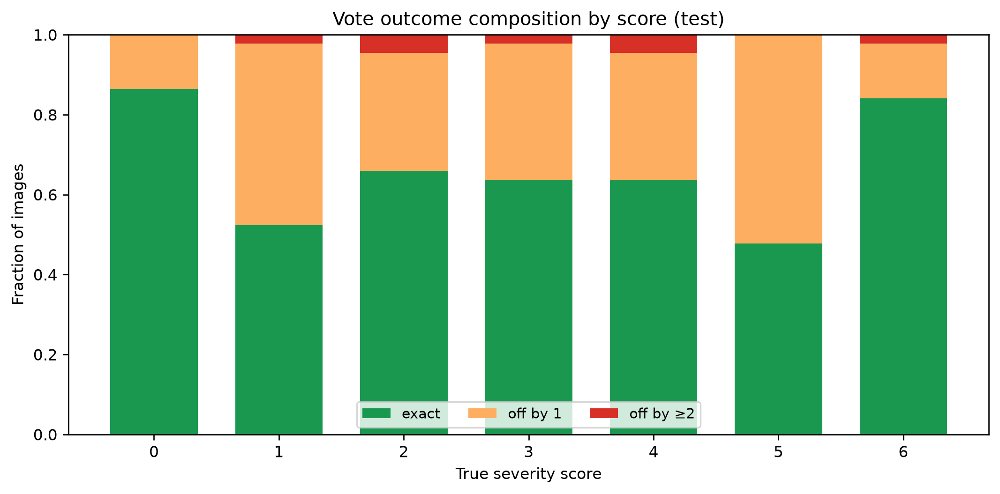
Vote outcome by true score (test): each bar splits that score’s images into exact (green), off-by-1 (amber) and off-by-≥2 (red). Bar height up to the amber top is near-miss accuracy. The middle scores lose most of their height to off-by-1; gross (≥2) errors are rare everywhere.
Confusion matrix of the majority vote (test). A tight band-diagonal — every error is to a neighbouring score, with score 5 spilling into 4 and 6.
Scores 0 and 6 are scored correctly ~80–86% of the time; the middle scores drop to ~0.43–0.66 (score 5 worst), but their lost accuracy goes almost entirely to the adjacent score — near-miss stays ≥0.95 across all scores and gross errors are rare. The committee has essentially solved “how much cell death, roughly”, and stumbles only on separating neighbouring severities.
3. Do the models fail on the same images, or different ones?
If the 100 models were interchangeable they would fail on identical images — every image would be scored right by either all 100 or none of them. The distribution of n_right tests that directly: a pile-up at 0 and 100 would mean no diversity, while a spread in between means different models miss different images.
Of 308 test images: 50 unanimously correct, 21 unanimously wrong, 237 SPLIT (some models right, some wrong).
Code
# 3.2fig, ax = plt.subplots(figsize=(9, 4))ax.hist(n_right, bins=np.arange(0, n_models +2) -0.5, color="#4C72B0")ax.set_xlabel("Number of the 100 models scoring the image exactly right")ax.set_ylabel("Number of test images")ax.set_title(f"{split}/{len(yt)} test images are split decisions")plt.tight_layout(); fig.savefig(THESIS_PLOTS /"per_image_agreement_histogram.png", dpi=300, bbox_inches="tight")plt.show()
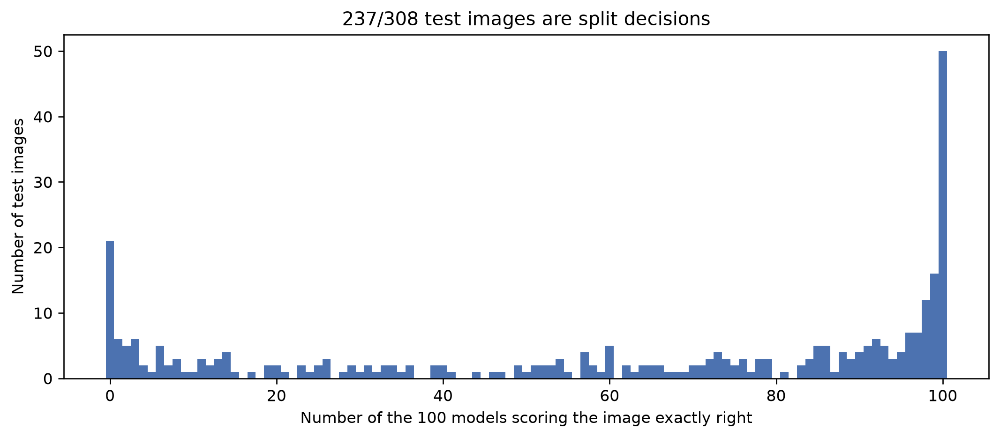
How many of the 100 models score each test image exactly right. Interchangeable models would pile up at 0 and 100; instead most images sit in between — different models miss different images.
The spread confirms diversity: only a minority of images are unanimous. Two views of where that diversity sits follow — by severity score, and by source project.
Code
# 3.3frac = n_right / n_modelsfig, ax = plt.subplots(figsize=(9, 4.5))ax.boxplot([frac[yt == c] for c in CLASSES], positions=CLASSES, widths=0.6, patch_artist=True, boxprops=dict(facecolor="#8FB8DE"), medianprops=dict(color="black"), flierprops=dict(marker=".", markersize=3))ax.set_xlabel("True severity score"); ax.set_ylabel("Fraction of 100 models correct")ax.set_ylim(-0.02, 1.02); ax.set_title("Per-image model agreement, by score")plt.tight_layout(); plt.show()
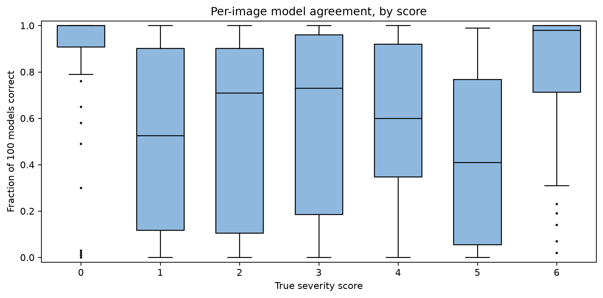
Per-image fraction of the 100 models correct, grouped by true score. The middle scores (esp. 5) both score lowest and disagree most; 0 and 6 are near-unanimous.
A project is one of the eight upstream experiments (Projects A–H) the images were originally sourced from — each a group of many source images (different plants, dates, labs, imaging conditions), the level uv-agroinfiltration-dataset’s 04_project_level_analysis treats as the real batch. Project membership is the authoritative image_info.csv mapping (vendored to data/): a crop’s source Basename (filename with the trailing _Row_Col_Pos stripped) is looked up to its source folder, whose top level is the project, then mapped to the anonymised A–H label. Grouping the per-image fraction-correct by project tests whether difficulty is a batch property (imaging conditions shared across a whole experiment) rather than per-crop.
Code
# 3.4 Map each test crop to its project (A-H) via the authoritative image_info.csv.info = pd.read_csv(ROOT /"data"/"image_info.csv")info["Path"] = info["Path"].ffill() # Path is filled downwardskey = pd.read_csv(ROOT /"data"/"project_anonymisation_key.csv")anon =dict(zip(key["Project"], key["Anon_Label"]))stem_to_project = { re.sub(r"[.](tif|TIF)$", "", img): anon.get(path.split("/")[0], path.split("/")[0])for img, path inzip(info["Image"], info["Path"])}def crop_project(fn):return stem_to_project.get(re.sub(r"_\d+_\d+_\d+$", "", Path(fn).stem))project = np.array([crop_project(f) for f in files_t], dtype=object)print(f"Mapped {np.sum(project !=None)}/{len(project)} test crops to a project; "# noqa: E711f"per-project counts: {dict(pd.Series(project).value_counts().sort_index())}")
# 3.4bproj_order =sorted(set(project), key=lambda p: np.median(frac[project == p]))fig, ax = plt.subplots(figsize=(9, 4.5))ax.boxplot([frac[project == p] for p in proj_order], positions=range(len(proj_order)), widths=0.6, patch_artist=True, boxprops=dict(facecolor="#B0C4DE"), medianprops=dict(color="black"), flierprops=dict(marker=".", markersize=3))ax.set_xticks(range(len(proj_order)))ax.set_xticklabels([f"{p}\n(n={int((project == p).sum())})"for p in proj_order], fontsize=8)ax.set_ylabel("Fraction of 100 models correct"); ax.set_ylim(-0.02, 1.02)ax.set_xlabel("Source project (ordered by median)")ax.set_title("Per-image model agreement, by project")plt.tight_layout(); plt.show()
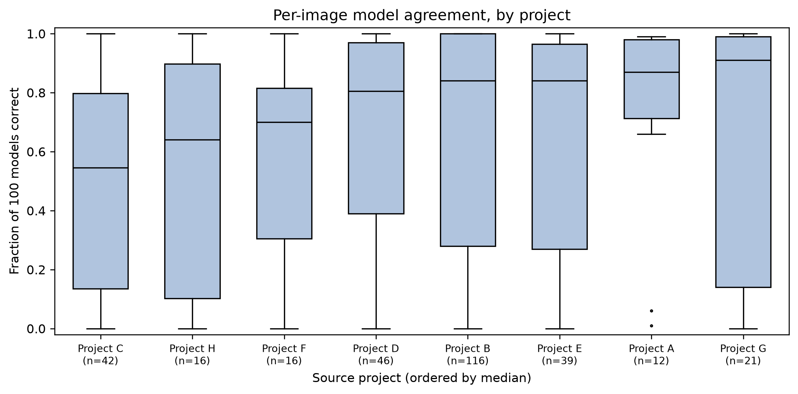
Per-image fraction of models correct, grouped by the eight source projects (A–H, ordered by median). Whole projects sit systematically high or low — difficulty is partly a batch/imaging-condition property, not just per-crop.
The finer source-image level (one photographed leaf) is shown too, for the images with ≥4 test crops — difficulty also clusters at this level within projects.
Code
# 3.4csrc = np.array([re.sub(r"_\d+_\d+_\d+$", "", Path(f).stem) for f in files_t])src_ids, src_counts = np.unique(src, return_counts=True)keep = src_ids[src_counts >=4]order =sorted(keep, key=lambda p: np.median(frac[src == p]))print(f"{len(src_ids)} source images in test; {len(keep)} have >=4 test crops (shown).")fig, ax = plt.subplots(figsize=(11, 4))ax.boxplot([frac[src == p] for p in order], positions=range(len(order)), widths=0.6, patch_artist=True, boxprops=dict(facecolor="#C7D7E8"), medianprops=dict(color="black"), flierprops=dict(marker=".", markersize=3))ax.set_xticks(range(len(order)))ax.set_xticklabels(order, rotation=60, ha="right", fontsize=7)ax.set_ylabel("Fraction correct"); ax.set_ylim(-0.02, 1.02)ax.set_xlabel("Source image (≥4 test crops, ordered by median)")ax.set_title("Per-image model agreement, by source image")plt.tight_layout(); plt.show()
153 source images in test; 14 have >=4 test crops (shown).
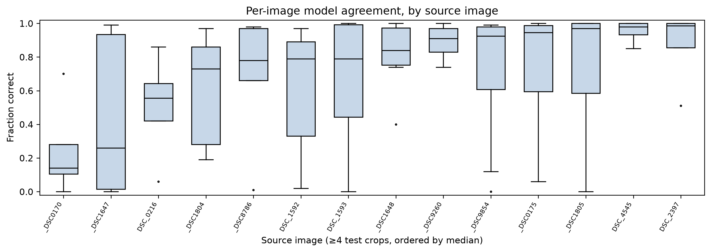
The same, at the finer source-image level (source images with ≥4 test crops, ordered by median). Crops from one leaf tend to be scored similarly.
Code
# 3.5per_model_test = (Pt == yt[None, :]).mean(1)oracle =float((Pt == yt[None, :]).any(0).mean())bars = {"single\n(mean)": per_model_test.mean(), "single\n(best)": per_model_test.max(),"majority\nvote": exact(v_t, yt), "oracle\n(≥1 correct)": oracle}fig, ax = plt.subplots(figsize=(8, 4.5))ax.bar(list(bars), list(bars.values()), color=["#B0B0B0", "#7f7f7f", "#4C72B0", "#55A868"])for i, val inenumerate(bars.values()): ax.text(i, val +0.01, f"{val:.2f}", ha="center", fontsize=10)ax.set_ylim(0, 1.0); ax.set_ylabel("Test exact accuracy")ax.set_title("Diversity exists (oracle ≈ 0.93) but the vote cannot harvest it")plt.tight_layout(); fig.savefig(THESIS_PLOTS /"diversity_headroom.png", dpi=300, bbox_inches="tight")plt.show()import itertoolsrng = np.random.default_rng(0)sample = rng.choice(n_models, 25, replace=False)pair = np.mean([(Pt[a] == Pt[b]).mean() for a, b in itertools.combinations(sample, 2)])print(f"Mean pairwise agreement between models (test): {pair:.3f} — correlated, not identical.")
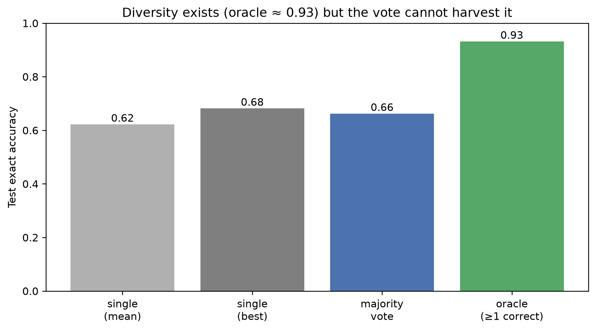
The diversity headroom. ‘At least one of 100 correct’ (oracle) sits far above the vote or the best single model: the committee collectively covers most images, but its correlated errors on the hard ones stop the vote from harvesting that.
Mean pairwise agreement between models (test): 0.779 — correlated, not identical.
The models are genuinely diverse — ~0.93 of test images are caught by some model, and mean pairwise agreement is only ~0.77 — which is why the vote is stable. But the diversity is not independent where it matters: on the hard middle-score images the models tend to be wrong together, so the vote cannot convert the 0.93 oracle headroom into accuracy.
4. Candidate label errors
An image the whole committee misses is either mislabelled or intrinsically hard. The discriminating signal is near-unanimity combined with distance: independently trained models rarely converge on the same wrong score by chance, so an image where a large majority agrees on a score >=2 away from the recorded label is a strong mislabel candidate. An off-by-one majority, by contrast, is just adjacent-score ambiguity (section 2) and is not treated as a label error.
The committee is every configuration that is statistically indistinguishable from the best in its own grid – within one standard error of that grid’s best validation accuracy – and it spans model families rather than being 100 CNNs from one grid. The augmented runs are ranked on validation accuracy over ORIGINAL crops, because their plain avg_vaf is measured over a fold containing augmented copies and is not the same quantity.
Code
# 4.0 Assemble the committee.import glob as _glob_SE =lambda p: np.sqrt(p * (1- p) /2289)_parts, _labels = [], []_v = np.asarray(avg_vaf)_parts.append(Pt[_v >= _v.max() - _SE(_v.max())]); _labels.append("CNN")_pz = np.load(ROOT /"analyses/11_ordinal_decision_boundaries/prob_cache/probs.npz", allow_pickle=True)_vr = pd.concat([pd.read_csv(ROOT /"models/04_Medoid_ViT_RandomSearch/01_Categorical_Loss/random_search_results.csv")]+ [pd.read_csv(q) for q in _glob.glob(str( ROOT /"models/04_Medoid_ViT_RandomSearch/01_Categorical_Loss/parts/*.csv"))], ignore_index=True).drop_duplicates("model_id").set_index("model_id")_vv = _vr.loc[[int(m) for m in _pz["vit_ids"]], "avg_vaf"].to_numpy()_parts.append(_pz["vit"].argmax(2)[_vv >= _vv.max() - _SE(_vv.max())]); _labels.append("ViT")# Geometric augmentation: only the tied models that were saved can be scored. The grid keeps# the top 100 by avg_vaf, so a model tied on avg_vaf_orig but outside that 100 has no# weights on disk; the count actually used is printed rather than assumed._GC = CACHE /"geo_tied_predictions.npz"if _GC.exists(): _geo = np.load(_GC)["P"]else: _g = pd.read_csv(ROOT /"models/07_Medoid_CNN_GeomAug/01_MatchLargestClass/random_search_results.csv" ).drop_duplicates("model_id").dropna(subset=["avg_vaf_orig"]) _gb = _g.avg_vaf_orig.max() _gids =set(_g[_g.avg_vaf_orig >= _gb - _SE(_gb)].model_id.astype(int))import tensorflow as _tf3if"_Xt"notindir(): sys.path.append(str(ROOT /"src"))import base_dataset as _bd3 _Xt = np.asarray(_bd3.load_dataset(str( ROOT /"data/datasets/medoid_64/medoid_64.npy"))["test_images"], dtype="float32") _rows = []for _pth insorted(_glob.glob(str( ROOT /"models/07_Medoid_CNN_GeomAug/01_MatchLargestClass/results/*/model.keras"))):ifint(Path(_pth).parent.name.split("_")[-1]) in _gids: _rows.append(np.argmax(_tf3.keras.models.load_model(_pth, compile=False) .predict(_Xt, verbose=0), 1)) _tf3.keras.backend.clear_session() _geo = np.array(_rows); np.savez(_GC, P=_geo)_parts.append(_geo); _labels.append("CNN, geometric aug")_nd2 = pd.read_csv(ROOT /"analyses/03_feature_classifiers/model_cache/nondl_test_predictions.csv")_nd2 = _nd2.set_index("image_id").loc[[f.replace(".tif", "") for f in files_t]]_parts.append(_nd2.ordinal_regression.to_numpy()[None, :]); _labels.append("ordinal regression")COMMITTEE = np.vstack(_parts)COMMITTEE_N =dict(zip(_labels, [len(x) for x in _parts]))_cm_modal = np.array([np.bincount(COMMITTEE[:, i], minlength=7).argmax()for i inrange(COMMITTEE.shape[1])])_cm_agree = np.array([np.bincount(COMMITTEE[:, i], minlength=7).max()for i inrange(COMMITTEE.shape[1])])
Code
# 4.1print("committee: "+", ".join(f"{k}{v}"for k, v in COMMITTEE_N.items())+f" = {len(COMMITTEE)} models")off = np.abs(_cm_modal - yt)strong = pd.DataFrame({"filename": files_t, "true_label": yt, "modal_pred": _cm_modal,"modal_agreement": _cm_agree,"pct": 100* _cm_agree /len(COMMITTEE)})[off >=2]strong = strong.sort_values("modal_agreement", ascending=False)print(f"\n{len(strong)} crops have a committee modal score >=2 from the recorded label.")print(f"({int(((np.abs(_cm_modal - yt) ==1) & (_cm_agree >=0.6*len(COMMITTEE))).sum())} "f"more have a >=60% majority off by exactly 1 = adjacent-score ambiguity.)")strong.round(1)
committee: CNN 22, ViT 51, CNN, geometric aug 17, ordinal regression 1 = 91 models
5 crops have a committee modal score >=2 from the recorded label.
(76 more have a >=60% majority off by exactly 1 = adjacent-score ambiguity.)
Every test crop whose committee modal score is at least two steps from the recorded label, ordered by how much of the committee agrees.
4b. Agreement across model families
The committee above is 100 CNNs. This asks the wider question: do the best CNN, the best ViT and the two feature models agree about which test crops are hard, or do different families fail on different images? Pairwise agreement is the fraction of the 308 test crops on which two models give the same prediction, right or wrong.
Code
# 4b.1# Loading the two saved models and running them over the 308 test crops costs about 14 s,# 12.5 s of it the ViT, on top of a 14 s TensorFlow import. Both prediction vectors are# cached like the 100-model matrices above, and TensorFlow is imported only on a miss.# Delete family_predictions.npz to rebuild._FAM = CACHE /"family_predictions.npz"_P = {}if _FAM.exists(): _fz = np.load(_FAM) _P["CNN"], _P["ViT"] = _fz["cnn"], _fz["vit"]else:import glob as _globimport tensorflow as _tf sys.path.append(str(ROOT /"src"))import model_builders as _mb # noqa: F401 (registers ClassToken so the ViT loads)import base_dataset as _bd _ds = _bd.load_dataset(str(ROOT /"data"/"datasets"/"medoid_64"/"medoid_64.npy")) _Xt = np.asarray(_ds["test_images"], dtype="float32") _P["CNN"] = np.argmax(_tf.keras.models.load_model(_glob.glob(str( ROOT /"models/03_Medoid_CNN_RandomSearch/*/results/*_3606/model.keras"))[0]) .predict(_Xt, verbose=0), 1) _P["ViT"] = np.argmax(_tf.keras.models.load_model(_glob.glob(str( ROOT /"models/04_Medoid_ViT_RandomSearch/*/results/*_1426/model.keras"))[0]) .predict(_Xt, verbose=0), 1) np.savez(_FAM, cnn=_P["CNN"], vit=_P["ViT"])# Aligned on files_t, the test filenames this analysis already carries, so the rows cannot# drift out of order relative to yt._nd = pd.read_csv(ROOT /"analyses/03_feature_classifiers/model_cache/nondl_test_predictions.csv")_nd = _nd.set_index("image_id").loc[[f.replace(".tif", "") for f in files_t]]assert (_nd.true.to_numpy() == yt).all(), "non-DL predictions are misaligned with yt"_P["ordinal regression"] = _nd.ordinal_regression.to_numpy()# The ordinal forest is dropped from the chapter: it is the weakest non-trivial model and# nothing downstream uses it. Its predictions are still exported by analyses/03.# The two augmented-training CNNs, added so the comparison spans training regimes as well as# model families. Cached alongside the others; delete aug_predictions.npz to rebuild._AUG = CACHE /"aug_predictions.npz"_AUG_SRC = {"CNN, geometric aug": ROOT /"models/07_Medoid_CNN_GeomAug/01_MatchLargestClass/results/*_6848/model.keras","CNN, cGAN aug": ROOT /"models/08_Medoid_CNN_CGANAug/01_MatchLargestClass/results/*_3590/model.keras"}if _AUG.exists(): _az = np.load(_AUG)for _k in _AUG_SRC: _P[_k] = _az[_k]else:import glob as _g2, tensorflow as _tf2# _Xt is only built when the family-prediction cache misses, so load the crops here too.if"_Xt"notindir(): sys.path.append(str(ROOT /"src"))import base_dataset as _bd2 _Xt = np.asarray(_bd2.load_dataset(str(ROOT /"data"/"datasets"/"medoid_64"/"medoid_64.npy"))["test_images"], dtype="float32") _got = {}for _k, _pat in _AUG_SRC.items(): _hits = _g2.glob(str(_pat))if _hits: _got[_k] = np.argmax(_tf2.keras.models.load_model(_hits[0], compile=False) .predict(_Xt, verbose=0), 1)iflen(_got) ==len(_AUG_SRC): np.savez(_AUG, **_got) _P.update(_got)_names =list(_P)_A = np.array([[np.mean(_P[a] == _P[b]) for b in _names] for a in _names])_ok = pd.DataFrame({k: (v == yt).astype(int) for k, v in _P.items()})# Stacked, not side by side: the heatmap is square and the bar chart is wide, so a 1x2# row squashes both.# Heatmap only. The companion bar chart (how many of the four score each crop correctly)# was three numbers, which the prose carries instead._fig, _ax0 = plt.subplots(figsize=(5.4, 4.6))_ax = [_ax0, _ax0]_im = _ax[0].imshow(_A, cmap="Blues", vmin=0.4, vmax=1)for i inrange(len(_names)):for j inrange(len(_names)): _ax[0].text(j, i, f"{_A[i, j]:.2f}", ha="center", va="center", fontsize=8, color="white"if _A[i, j] >0.75else"black")_ax[0].set_xticks(range(len(_names))); _ax[0].set_xticklabels(_names, fontsize=8, rotation=30, ha="right")_ax[0].set_yticks(range(len(_names))); _ax[0].set_yticklabels(_names, fontsize=8)_ax[0].set_title("Pairwise agreement on the prediction", fontsize=9)_fig.colorbar(_im, ax=_ax[0], fraction=0.046)_cnt = _ok.sum(1).value_counts().reindex(range(len(_names) +1), fill_value=0)_fig.tight_layout()_fig.savefig(THESIS_PLOTS /"cross_model_agreement.png", dpi=300, bbox_inches="tight")plt.show()print(pd.DataFrame(_A, index=_names, columns=_names).round(3).to_string())print(f"\nall four correct: {int(_cnt.get(len(_names), 0))} crops; "f"none correct: {int(_cnt.get(0, 0))}")for k, v in _P.items():print(f" {k:20s} exact {np.mean(v == yt):.4f}")
/var/folders/t2/x6n0myz97530m_6h9clj5ds4000fpx/T/ipykernel_75038/3472072806.py:84: Pandas4Warning: Starting with pandas version 4.0 all arguments of sum will be keyword-only.
_cnt = _ok.sum(1).value_counts().reindex(range(len(_names) + 1), fill_value=0)
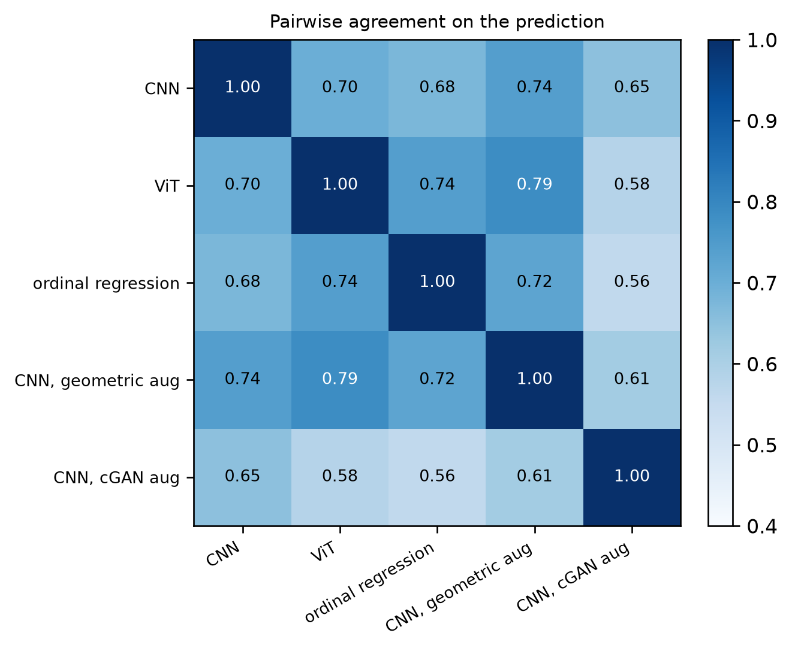
Pairwise agreement between the best model of each family on the 308 test CDAs (A), and how many of the four score each crop correctly (B).
CNN ViT ordinal regression CNN, geometric aug CNN, cGAN aug
CNN 1.000 0.698 0.675 0.740 0.649
ViT 0.698 1.000 0.740 0.786 0.581
ordinal regression 0.675 0.740 1.000 0.724 0.558
CNN, geometric aug 0.740 0.786 0.724 1.000 0.614
CNN, cGAN aug 0.649 0.581 0.558 0.614 1.000
all four correct: 91 crops; none correct: 39
CNN exact 0.6169
ViT exact 0.6429
ordinal regression exact 0.6331
CNN, geometric aug exact 0.6688
CNN, cGAN aug exact 0.5487
4b-ii. Where the best CNN departs from the raters
Section 3 of analyses/03_feature_classifiers does this for the best non-DL model. The same difference for the best CNN says whether the two model families go wrong in the same places. The rater matrix counts 917 judgements and the CNN 308 predictions, so both are row-normalised before differencing and each cell is a change in row proportion.
Code
# 4b-ii.1from matplotlib.patches import Rectangle as _Rect# The human matrix carries an eighth column, the tautological judgements Metric 3# removes. They must stay in the row totals: without them the denominator is 875 and# row-normalising gives a human diagonal of 72.23%, against the 68.92% Metric 3# reports over all 917. A model has no such category, so its matrix is padded with a# zero column and the two are then directly comparable._hum = pd.read_csv(ROOT /"analyses/02_human_performance/thesis_plots/human_confusion_matrix.csv", index_col=0).to_numpy(dtype=float)# Model 6848 from models/07, the chapter's selected best model: rank 1 of 8,640 on# validation accuracy over original crops and top of the ensemble split. NOT _P["CNN"],# which is 3606, the top of the unaugmented grid.BEST_MODEL ="CNN, geometric aug"_cnn_cm = np.zeros((7, 7))for _t, _q inzip(yt, _P[BEST_MODEL]): _cnn_cm[int(_t), int(_q)] +=1_cnn_cm8 = np.hstack([_cnn_cm, np.zeros((7, 1))])_hn = _hum / np.clip(_hum.sum(1, keepdims=True), 1, None)_mn = _cnn_cm8 / np.clip(_cnn_cm8.sum(1, keepdims=True), 1, None)_dif = _mn - _hn# The confusion matrix the grid search saves next to each model is the cross-validation# matrix over the 2,289 train+val crops, not the test set, so the test one is built here._f1, _a1 = plt.subplots(figsize=(6.2, 5.2))_i1 = _a1.imshow(_cnn_cm, cmap="Greens")for i inrange(7):for j inrange(7): _a1.text(j, i, int(_cnn_cm[i, j]), ha="center", va="center", fontsize=8, color="white"if _cnn_cm[i, j] >0.6* _cnn_cm.max() else"black")if i == j: _a1.add_patch(_Rect((j -0.5, i -0.5), 1, 1, fill=False, edgecolor="black", lw=2))_a1.set_xticks(range(7)); _a1.set_yticks(range(7))_a1.set_xlabel("Predicted score"); _a1.set_ylabel("True score")_f1.colorbar(_i1, ax=_a1, fraction=0.046, label="Test CDAs")_f1.savefig(THESIS_PLOTS /"best_model_test_confusion.png", dpi=300, bbox_inches="tight")plt.show()print(f"test confusion total {int(_cnn_cm.sum())}, exact {np.trace(_cnn_cm) / _cnn_cm.sum():.4f}")_f2, _a2 = plt.subplots(figsize=(6.9, 5.2))_vv = np.abs(_dif).max()_i2 = _a2.imshow(_dif, cmap="RdBu_r", vmin=-_vv, vmax=_vv)for i inrange(7):for j inrange(8):ifabs(_dif[i, j]) >0.005: _a2.text(j, i, f"{_dif[i, j]:+.2f}", ha="center", va="center", fontsize=7, color="white"ifabs(_dif[i, j]) >0.6* _vv else"black")if i == j: _a2.add_patch(_Rect((j -0.5, i -0.5), 1, 1, fill=False, edgecolor="black", lw=2))_a2.set_xticks(range(8), [*range(7), "taut."]); _a2.set_yticks(range(7))_a2.set_xlabel("Predicted score"); _a2.set_ylabel("True score")_f2.colorbar(_i2, ax=_a2, fraction=0.046, label="Model minus human (row proportion)")_f2.savefig(THESIS_PLOTS /"best_model_confusion_vs_human.png", dpi=300, bbox_inches="tight")plt.show()print(f"diagonal change: {np.diag(_dif).round(3)}")
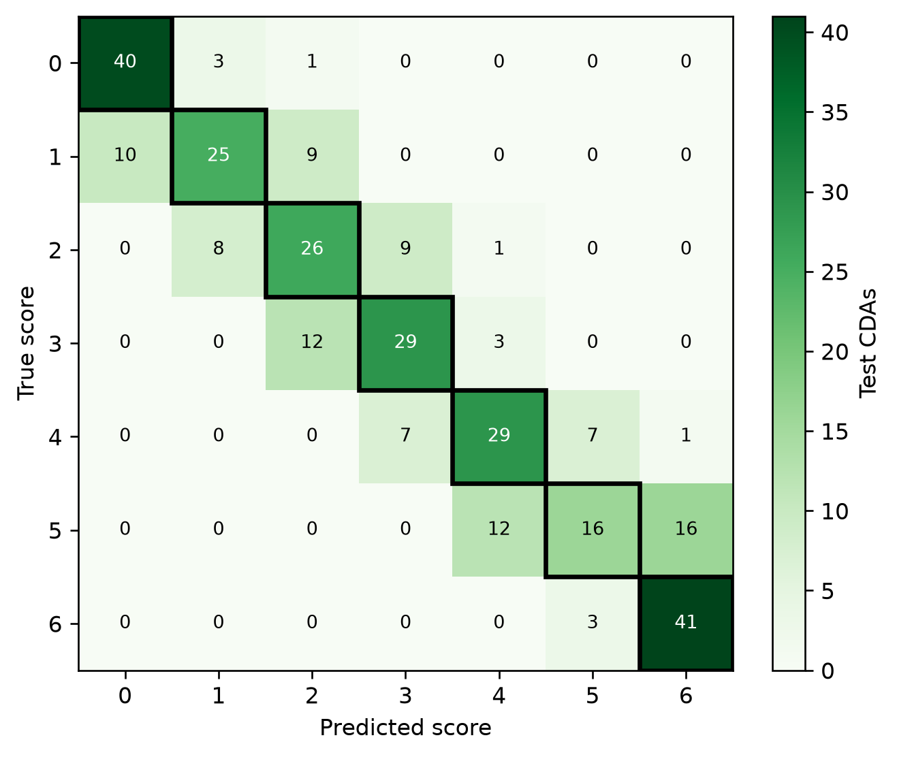
Selected best model (geometric-augmentation CNN 6848) minus human raters, as a change in row proportion on the 308 test CDAs.
# 4b-ii.2# The headline model-versus-human comparison the chapter reports. The human rate is a# per-judgement figure over 917 rater judgements (analyses/02) and the model's a per-crop# figure over 308 crops, so the two cannot be paired crop by crop. The model side is# bootstrapped over its 308 crops with the human rate held at its point estimate; the human# sampling error is reported separately by analyses/02 as its own bootstrap CI.HUMAN_EXACT, HUMAN_NEAR =0.6892, 0.9280_p = np.asarray(_P[BEST_MODEL])_B = np.random.default_rng(0).integers(0, len(yt), (20000, len(yt)))print(f"model 6848: exact {100* (_p == yt).mean():.2f}%, "f"near-miss {100* (np.abs(_p - yt) <=1).mean():.2f}%")for _n, _ok, _h in [("exact", (_p == yt).astype(float), HUMAN_EXACT), ("near-miss", (np.abs(_p - yt) <=1).astype(float), HUMAN_NEAR)]: _d = _ok[_B].mean(1) - _hprint(f" vs human {_n:9s}: {100* (_ok.mean() - _h):+.2f} pp 95% CI "f"{100* np.quantile(_d, .025):+.2f} to {100* np.quantile(_d, .975):+.2f}")
model 6848: exact 66.88%, near-miss 99.03%
vs human exact : -2.04 pp 95% CI -7.56 to +3.16
vs human near-miss: +6.23 pp 95% CI +4.93 to +7.20
4c. Agreement inside one grid against across grids
Section 4b compares one model from each family. This asks the same question inside a single grid: among the configurations that are statistically tied on validation, do they agree with each other more than a model agrees with a different architecture? Both grids are shown, so the CNN and ViT plateaus are readable against each other and against the 0.70 mean of the cross-family comparison.
Code
# 4c.1# glob is imported inside the family-prediction cache-miss branch above, so it is not in# scope on a cache hit; import it here rather than depend on that branch having run.import glob as _glob_se_v = np.sqrt(0.65*0.35/2289)_vafs = np.asarray(avg_vaf)_tied_idx = np.where(_vafs >= _vafs.max() - _se_v)[0]_Ptied = Pt[_tied_idx]_off = np.array([[np.mean(_Ptied[i] == _Ptied[j]) for j inrange(len(_tied_idx))]for i inrange(len(_tied_idx))])[np.triu_indices(len(_tied_idx), 1)]# The ViT side comes from analyses/11, which cached the full softmax for 100 ViTs as well as# 100 CNNs; the tied set is defined the same way, on that grid's own best._pz = np.load(ROOT /"analyses/11_ordinal_decision_boundaries/prob_cache/probs.npz", allow_pickle=True)_vit_pred = _pz["vit"].argmax(2)_vit_res = pd.concat( [pd.read_csv(ROOT /"models/04_Medoid_ViT_RandomSearch/01_Categorical_Loss/random_search_results.csv")]+ [pd.read_csv(q) for q in _glob.glob(str( ROOT /"models/04_Medoid_ViT_RandomSearch/01_Categorical_Loss/parts/*.csv"))], ignore_index=True).drop_duplicates("model_id").set_index("model_id")_vit_vaf = _vit_res.loc[[int(m) for m in _pz["vit_ids"]], "avg_vaf"].to_numpy()_vt = np.where(_vit_vaf >= _vit_vaf.max() - _se_v)[0]_Pv = _vit_pred[_vt]_offv = np.array([[np.mean(_Pv[i] == _Pv[j]) for j inrange(len(_vt))]for i inrange(len(_vt))])[np.triu_indices(len(_vt), 1)]# Separate panels rather than an overlay: the ViT grid has 1,275 tied pairs against the# CNN's 231, so on a shared count axis the CNN histogram is flattened to nothing._bins = np.linspace(min(_off.min(), _offv.min()) -0.01,max(_off.max(), _offv.max()) +0.01, 28)_fig, _ax = plt.subplots(2, 1, figsize=(6.6, 5.4), sharex=True)for _k, (_d, _c, _lab, _n) inenumerate([ (_off, "#4C72B0", "CNN", len(_tied_idx)), (_offv, "#DD8452", "ViT", len(_vt))]): _ax[_k].hist(_d, bins=_bins, color=_c, alpha=0.85) _ax[_k].axvline(np.median(_d), color="#C44E52", ls="--", lw=1.3, label=f"Median {np.median(_d):.3f}") _ax[_k].set_ylabel("Model pairs") _ax[_k].set_title(f"{_lab}: {_n} tied configurations, {len(_d)} pairs", fontsize=9) _ax[_k].legend(fontsize=8, frameon=False) _ax[_k].spines[["top", "right"]].set_visible(False)_ax[1].set_xlabel("Pairwise agreement")_fig.tight_layout()_fig.savefig(THESIS_PLOTS /"tied_cnn_agreement.png", dpi=300, bbox_inches="tight")_fig.canvas.draw()for _n2, _a2 inzip("ab", _ax): _bb2 = _a2.get_tightbbox(_fig.canvas.get_renderer()).transformed( _fig.dpi_scale_trans.inverted()) _fig.savefig(THESIS_PLOTS /f"tied_cnn_agreement_{_n2}.png", dpi=300, bbox_inches=_bb2)plt.show()print(f"CNN tied {len(_tied_idx)}: median {np.median(_off):.3f}, range {_off.min():.3f}-{_off.max():.3f}")print(f"ViT tied {len(_vt)}: median {np.median(_offv):.3f}, range {_offv.min():.3f}-{_offv.max():.3f}")
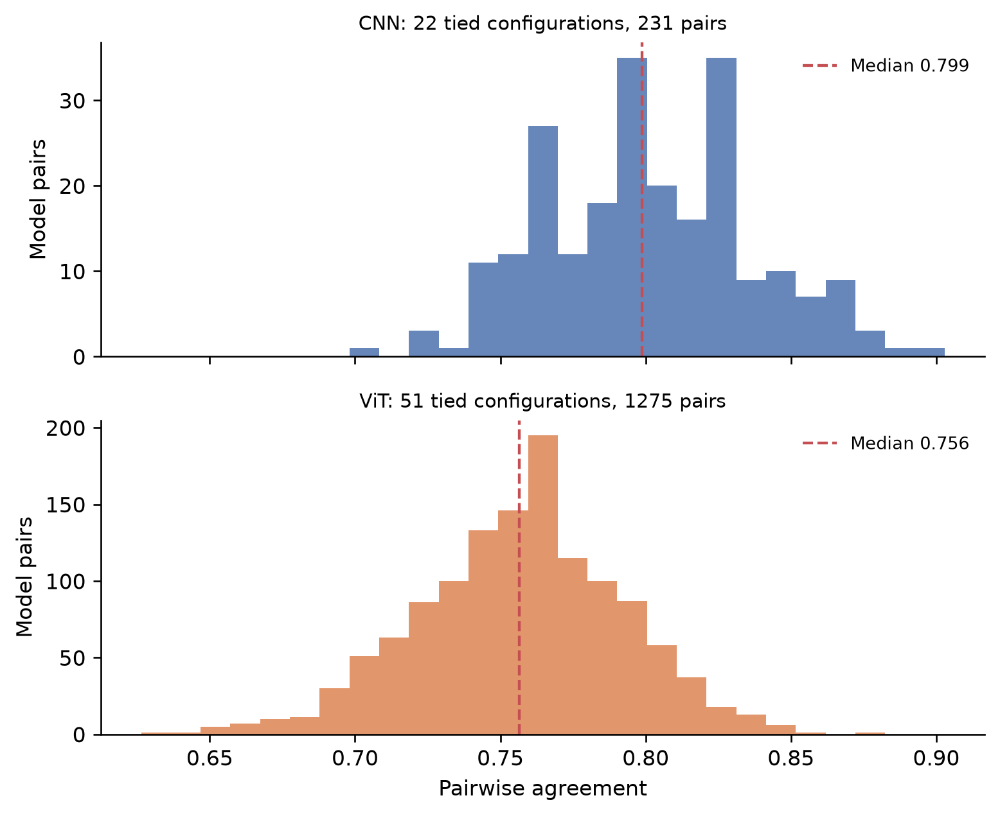
Distribution of pairwise agreement on the prediction among the configurations tied within 1 SE of the best validation accuracy, for the CNN grid and the ViT grid.
CNN tied 22: median 0.799, range 0.698-0.893
ViT tied 51: median 0.756, range 0.636-0.880
4d. The noise floor score by score
analyses/08_accuracy_noise_floor plots test against validation accuracy over the whole grid and marks the configurations tied within 1 SE. That is one number per model, pooled over all seven scores. This asks the same question per score: on the crops of a given true score, how much does test accuracy move across models that validation cannot separate?
Two limits on what this can be. Only the 100 kept models have stored test predictions, so the cloud is the top-100 configurations rather than all 8,640 — the low-accuracy mass of the grid is absent by construction. And the x axis stays overall validation accuracy, because that is the quantity the search selects on; there is no per-score validation accuracy to rank by. Each panel therefore reads as: among models chosen by one pooled number, how far apart do they land on this score alone? Each panel has 44 test crops, so one crop is 2.3 percentage points.
Code
# 4d.1_hum_cm = pd.read_csv( ROOT /"analyses/02_human_performance/thesis_plots/human_confusion_matrix.csv", index_col=0).to_numpy(dtype=float)# Row totals include the tautological column, so this is agreement over all 917# judgements, the same basis as the reported 68.92%._hum_per_score = np.diag(_hum_cm[:, :7]) / _hum_cm.sum(1)_se_d = np.sqrt(0.65*0.35/2289)_vaf_all = np.asarray(avg_vaf)_tied_d = _vaf_all >= _vaf_all.max() - _se_d_fig, _axs = plt.subplots(3, 3, figsize=(9.0, 8.2), sharex=True, sharey=True)for _sc inrange(7): _a = _axs.ravel()[_sc] _m = yt == _sc # the 44 test crops of this score _acc = (Pt[:, _m] == _sc).mean(1) # per-model accuracy on them _a.scatter(_vaf_all[~_tied_d], _acc[~_tied_d], s=12, alpha=0.35, color="grey") _a.scatter(_vaf_all[_tied_d], _acc[_tied_d], s=26, color="#4C72B0", edgecolor="white", linewidth=0.3, zorder=3) _a.axhline(_hum_per_score[_sc], color="#C44E52", ls="--", lw=1.1) _a.set_title(f"Score {_sc} (n={_m.sum()}, spread "f"{_acc[_tied_d].min():.2f}-{_acc[_tied_d].max():.2f})", fontsize=8.5) _a.grid(alpha=0.25)for _a in _axs.ravel()[7:]: _a.set_visible(False)_axs[2, 0].set_xlabel("Validation accuracy (all scores)")_axs[1, 0].set_ylabel("Test accuracy on this score")_h = [plt.Line2D([], [], marker="o", ls="", color="#4C72B0", label=f"Tied within 1 SE (n={int(_tied_d.sum())})"), plt.Line2D([], [], marker="o", ls="", color="grey", alpha=0.5, label=f"Other kept models (n={int((~_tied_d).sum())})"), plt.Line2D([], [], ls="--", color="#C44E52", label="Human raters, this score")]_fig.legend(handles=_h, loc="lower right", bbox_to_anchor=(0.97, 0.08), frameon=False, fontsize=9)_fig.tight_layout()_fig.savefig(THESIS_PLOTS /"noise_floor_by_score.png", dpi=300, bbox_inches="tight")plt.show()_rows = []for _sc inrange(7): _m = yt == _sc _acc = (Pt[:, _m] == _sc).mean(1) _rows.append({"score": _sc, "human": round(_hum_per_score[_sc], 3),"tied_min": round(_acc[_tied_d].min(), 3),"tied_median": round(float(np.median(_acc[_tied_d])), 3),"tied_max": round(_acc[_tied_d].max(), 3),"tied_range_pp": round(100* (_acc[_tied_d].max() - _acc[_tied_d].min()), 1)})print(pd.DataFrame(_rows).to_string(index=False))
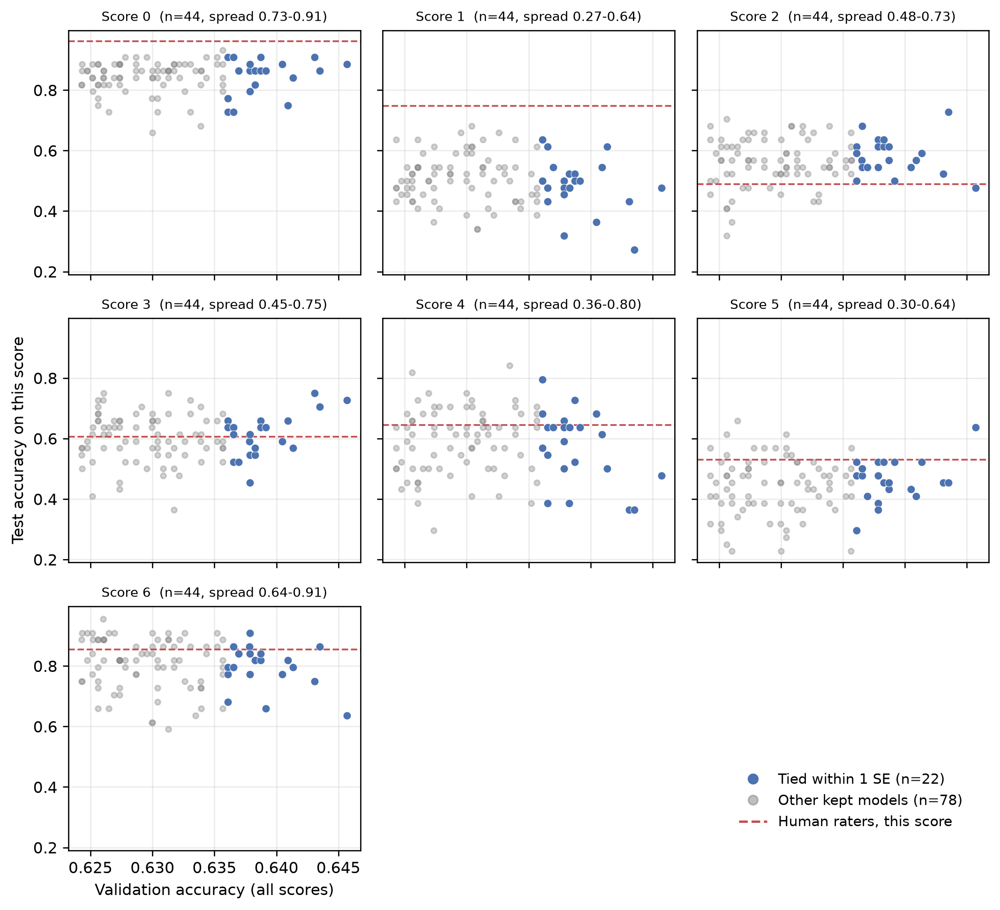
Test accuracy on the crops of each true score against overall validation accuracy, for the 100 kept models. The tied set is the configurations within 1 SE of the best validation accuracy; the dashed line is human exact agreement on that score.
Section 4c’s heatmap pools all 308 test crops. This is the same 22 x 22 matrix computed on the 44 crops of one true score at a time, so a panel answers: on crops the raters called this score, how often do two tied models say the same thing? Each panel rests on 44 crops, so one crop is 2.3 percentage points and the per-cell noise is roughly three times that of the pooled version.
Code
# 4d.2_fig, _axs = plt.subplots(3, 3, figsize=(9.0, 8.6))_ims = []for _sc inrange(7): _a = _axs.ravel()[_sc] _m = yt == _sc _As = np.array([[np.mean(_Ptied[i][_m] == _Ptied[j][_m])for j inrange(len(_tied_idx))] for i inrange(len(_tied_idx))])# One colour scale across all seven panels, so a darker panel means more agreement# rather than a different normalisation. _ims.append(_a.imshow(_As, cmap="Blues", vmin=0.4, vmax=1)) _o = _As[np.triu_indices(len(_tied_idx), 1)] _a.set_title(f"Score {_sc} (median {np.median(_o):.2f})", fontsize=9) _a.set_xticks(range(0, len(_tied_idx), 7)); _a.set_yticks(range(0, len(_tied_idx), 7)) _a.tick_params(labelsize=7)for _a in _axs.ravel()[7:]: _a.set_visible(False)_axs[1, 0].set_ylabel("CNN configuration"); _axs[2, 0].set_xlabel("CNN configuration")_fig.colorbar(_ims[0], ax=_axs[2, 2], fraction=0.5, label="Pairwise agreement")_fig.tight_layout()_fig.savefig(THESIS_PLOTS /"tied_cnn_agreement_by_score.png", dpi=300, bbox_inches="tight")plt.show()for _sc inrange(7): _m = yt == _sc _As = np.array([[np.mean(_Ptied[i][_m] == _Ptied[j][_m])for j inrange(len(_tied_idx))] for i inrange(len(_tied_idx))]) _o = _As[np.triu_indices(len(_tied_idx), 1)]print(f" score {_sc}: median {np.median(_o):.3f} range {_o.min():.3f}-{_o.max():.3f}")print(f" pooled over all 308: median {np.median(_off):.3f}")
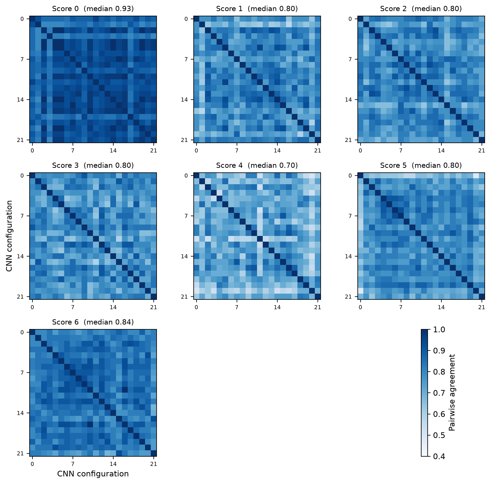
Pairwise agreement among the 22 tied CNN configurations, computed separately on the 44 test crops of each true score.
score 0: median 0.932 range 0.795-1.000
score 1: median 0.795 range 0.568-0.955
score 2: median 0.795 range 0.636-0.932
score 3: median 0.795 range 0.591-0.909
score 4: median 0.705 range 0.500-0.909
score 5: median 0.795 range 0.477-0.932
score 6: median 0.841 range 0.682-1.000
pooled over all 308: median 0.799
5. Ensembling — moved to analyses/14_ensembling
The ensembling material that used to sit here optimised on the test split, drew an arbitrary number of top-ranked members, and used one model family throughout. It has been removed rather than patched. analyses/14_ensembling replaces it: seven ensemble designs, each stated as an observation about the models before it is built, every choice made on the 455-crop ensemble split and every number reported once on the 308-crop test split.
6. Interpretation and Discussion
Errors are adjacent-score, concentrated on the middle (§2). The vote scores 0 and 6 at ~0.80–0.86 and the middle at ~0.43–0.66 (score 5 worst), but near-miss stays ≥0.95 across all scores and the confusion matrix is a tight band-diagonal. The committee has solved coarse severity and stumbles only on separating neighbours — the exact ceiling analyses/03 §6 identified from near-miss saturation.
The models are diverse — they miss different images (§3). Only ~15% of test images are unanimous (either way); ~77% are split decisions. The oracle ≈ 0.93 (some model gets almost every image right) against a best single of ~0.66 shows the models are far from interchangeable (pairwise agreement ~0.77). Difficulty is partly a whole-project property — source images sit high or low together (§3.4) — pointing at per-image conditions (lighting, staining) as a shared error cause.
Ensembling is answered in analyses/14_ensembling, not here (§5). That document tests seven ensemble designs against the diversity this one measures. Its finding: no combining rule is distinguishable from the best single model on 308 test crops, but the single model that looks best on the ensemble split falls 4.55 pp on test (p = 0.040), so what a committee buys is freedom from the selection lottery rather than accuracy.
A few images are likely mislabelled (§4). Only a handful are near-unanimous and off by ≥2 (e.g. a recorded 4 that all 100 models call 6); these are worth re-checking. The much larger off-by-one set is adjacent-score ambiguity, not bad labels.
The inference is verified, not assumed (§1.3). Every reported number rests on a prediction matrix whose per-model test accuracies reproduce the grid search’s own recorded test_acc exactly (max difference 0.000).
The oracle is not headroom.analyses/14_ensembling §2 decomposes it: of the crops where some member is right but the vote is not, 97.5% have a minority of members correct, so no plurality rule can reach them. “At least one of 22 correlated models is right” is closer to a statement about how many models there are than about what a committee could achieve.
Caveats. The 100 models are all top-100-by-CV, hence correlated (~0.77) — an agreed-wrong image is a strong signal but the vote’s gain over the best single model is small for the same reason. Test is 308 images (±~3 pp, analyses/03 §3), and the per-project boxplot (§3.4) uses only the 14 projects with ≥4 test crops. “True” labels are the recorded human scores — the very thing §4 stress-tests. ```